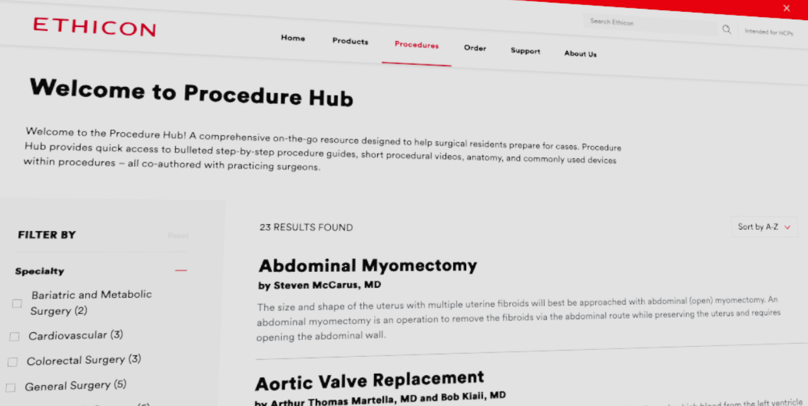

Portfolio

Objectives
- Add React.js front end to broaded developer access
- Continue to use a similar editorial platform as the legacy website (Drupal)
- Preserve editorial flow, including preview of content for government approval
- Use front-end components to create modular dashboards and pages
- Provide an accessible and responsive platform for all users
Major technology stack
- React.js front end
- API layer, compiled into JSON
- Drupal/PHP CMS back end
Key results
- Architected a platform intended to support a combination of live feeds, static feeds, and editorial content:
- A live JSON feed of federal data for programs and projects, rendered in React app
- A spreadsheet-based feed of data periodically uploaded to CMS for potential edits
- Site editorial content, rendered in React app, to use a component-based page structure
- Created a cached feed of CMS data, rendered in React app, based on page editorial requirements
- Utilized calculated data values to minimize user-added values in CMS fields
- Used the United States Web Design System (USWDS) used as a base design layer in React app
Objectives
- Display meaningful user data about past and potential future donations
- Allow users to find partner organizations and teams
- Create a leaderboard- and countdown-style display of results to enhance competition
Major technology stack
- API layer of customer donation data, compiled into JSON
- Drupal/PHP CMS back and front end as a multi-site platform
Key results
- Enhanced a platform intended to support a combination of customer donation data, customer information, and editorial content
- Created a design system to support the front-end patterns of four similar donation websites

Objectives
- Create one large website for multiple J&J MedTech brands as opposed to many small platform-based websites
- Add special branding for subsections of the website
- Add a data structure for filterable results of products, procedures, and other technologies while preserving brand information
Major technology stack
- Drupal/PHP CMS back end, with design considerations for many different brands
- Simple React.js microsites using CMS data
Key results
- Created key design patterns that accepted generic design (for majority of pages) and brand design (for specific pages)
- Enforced complex editorial and user roles for data and page access